3. Análisis bidimensional#
Sección 9.10.4.1.3 del enunciado. Se estudia la relación de cada variable con default y la
relación entre las variables independientes (multicolinealidad). Las pruebas estadísticas y las
tablas usan los 1.348.059 préstamos. Los gráficos de densidad (violín y KDE) usan una muestra
aleatoria de 100.000 préstamos y los de dispersión (pairplot y scatter matrix) una de 5.000, para
que sean legibles y se generen en tiempos razonables; ninguna conclusión depende solo de ellos.
import sys
import warnings
sys.path.insert(0, "../src")
warnings.filterwarnings("ignore")
import matplotlib.pyplot as plt
import numpy as np
import pandas as pd
import seaborn as sns
from scipy import stats
import estadistica as est
import utils as u
u.estilo()
pd.set_option("display.max_columns", 30, "display.width", 180, "display.max_rows", 120)
df = u.cargar_prestamos(u.NUM_EDA + u.CAT_EDA + ["default"])
df.loc[(df["dti"] < 0) | (df["dti"] > 100), "dti"] = np.nan # códigos inválidos (capítulo 2)
y = df["default"]
muestra = df.sample(100_000, random_state=u.SEMILLA)
muestra_chica = df.sample(5_000, random_state=u.SEMILLA)
print(f"{len(df):,} préstamos; tasa de default {100 * y.mean():.2f} %")
1,348,059 préstamos; tasa de default 19.98 %
3.1 Variables numéricas frente a default#
3.1.1 Diagramas de caja por clase#
Se omiten los puntos atípicos para que las cajas sean comparables; el capítulo 2 ya los describió.
fig, axes = plt.subplots(7, 4, figsize=(16, 24))
for ax, c in zip(axes.ravel(), u.NUM_EDA):
datos = [df.loc[y == k, c].dropna() for k in (0, 1)]
b = ax.boxplot(datos, tick_labels=["Pagado", "Default"], showfliers=False, patch_artist=True,
widths=0.55, medianprops={"color": "black"})
for caja, k in zip(b["boxes"], (0, 1)):
caja.set_facecolor(u.PALETA[k])
caja.set_alpha(0.75)
ax.set_title(c)
fig.suptitle("Distribución de cada variable numérica según la clase (sin atípicos)", y=1.0,
fontsize=13, weight="bold")
fig.tight_layout()
u.guardar_fig(fig, "03_boxplots_clase")
plt.show()
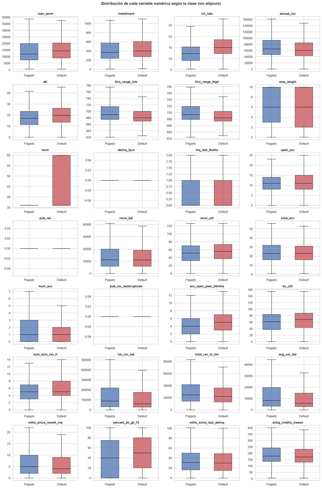
Las cajas de los préstamos en default están desplazadas hacia valores más riesgosos en las
variables de precio y capacidad de pago: tasa de interés más alta (mediana 15,1 % frente a 12,3 %),
plazo de 60 meses más frecuente, FICO más bajo (684 frente a 694), dti mayor y más cuentas
abiertas en los últimos 24 meses. En las variables de saldo (avg_cur_bal y tot_cur_bal, con
medianas de 5.748 y 61.197 dólares entre los defaults frente a 8.018 y 87.442 entre los pagados)
ocurre lo contrario, y en mort_acc (número de hipotecas) la media es menor entre los defaults
(1,37 frente a 1,75), aunque las medianas coinciden: los prestatarios con más patrimonio
financiero pagan más. En
conteos como delinq_2yrs o pub_rec las cajas son casi idénticas, lo que anticipa un poder
discriminante bajo.
3.1.2 Gráficos de violín de las variables más discriminantes#
clave = ["int_rate", "term", "fico_range_high", "dti", "annual_inc", "acc_open_past_24mths",
"loan_amnt", "revol_util"]
fig, axes = plt.subplots(2, 4, figsize=(16, 8))
for ax, c in zip(axes.ravel(), clave):
d = muestra[[c, "default"]].dropna()
if c == "annual_inc":
d[c] = np.log1p(d[c])
titulo = "log1p(annual_inc)"
else:
d[c] = d[c].clip(upper=d[c].quantile(0.995))
titulo = c
sns.violinplot(data=d, x="default", y=c, hue="default", palette=u.PALETA, ax=ax, cut=0,
inner="quartile", legend=False)
ax.set_title(titulo)
ax.set_xticklabels(["Pagado", "Default"])
ax.set_xlabel("")
fig.suptitle("Densidad por clase (muestra de 100.000 préstamos)", fontsize=13, weight="bold")
fig.tight_layout()
u.guardar_fig(fig, "03_violines")
plt.show()
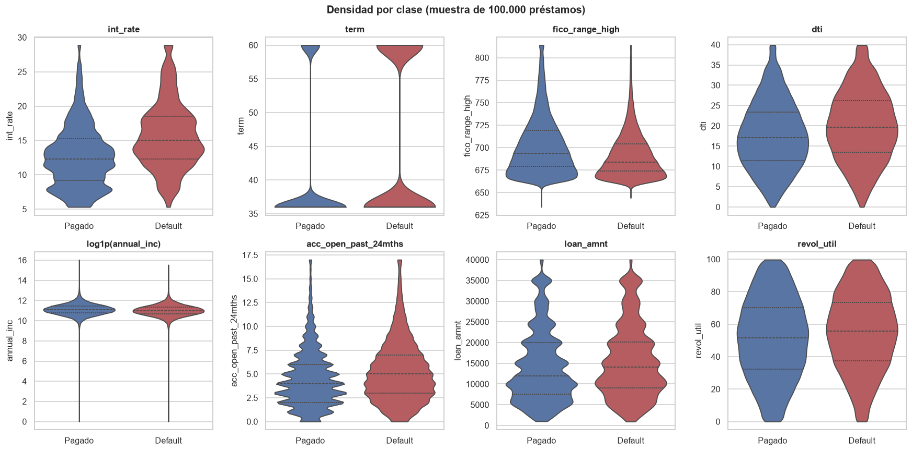
Los violines confirman que ninguna variable separa las clases por sí sola: las densidades se
solapan en casi todo su rango. int_rate muestra el desplazamiento más claro, con la masa de los
defaults concentrada por encima de 13 %. En term se ve que la proporción de préstamos a 60
meses es mucho mayor entre los defaults.
3.1.3 Diferencia de medias, pruebas t y de Mann-Whitney, y correlación punto-biserial#
Ninguna variable es normal (capítulo 2), por lo que la prueba principal es la de Mann-Whitney; la prueba t de Welch se incluye como referencia, válida aquí por el tamaño de muestra (teorema central del límite). Como tamaño del efecto se reporta el AUC univariado, \(\hat{A} = U_1 / (n_0 n_1) = P(X_1 > X_0) + \tfrac12 P(X_1 = X_0)\), la probabilidad de que un default tenga un valor mayor que un préstamo pagado, contando los empates como medio acierto: 0,5 indica que no hay separación. Con 1,3 millones de datos casi cualquier diferencia es significativa, así que la magnitud del efecto es lo que ordena las variables.
filas = []
for c in u.NUM_EDA:
x0, x1 = df.loc[y == 0, c].dropna(), df.loc[y == 1, c].dropna()
t, p_t = stats.ttest_ind(x1, x0, equal_var=False)
U, p_u = stats.mannwhitneyu(x1, x0, alternative="two-sided", method="asymptotic")
d = df[[c, "default"]].dropna()
r_pb, p_pb = stats.pointbiserialr(d["default"], d[c])
filas.append({"variable": c, "media_pagado": x0.mean(), "media_default": x1.mean(),
"dif_medias": x1.mean() - x0.mean(), "mediana_pagado": x0.median(),
"mediana_default": x1.median(), "t_Welch": t, "p_t": p_t, "p_MannWhitney": p_u,
"AUC_univariado": U / (len(x0) * len(x1)), "r_punto_biserial": r_pb, "p_rpb": p_pb})
biv = pd.DataFrame(filas).set_index("variable")
biv["|AUC-0,5|"] = (biv["AUC_univariado"] - 0.5).abs()
print("Valor p máximo en las tres pruebas:", f'{biv[["p_t", "p_MannWhitney", "p_rpb"]].max().max():.1e}')
biv = biv.sort_values("|AUC-0,5|", ascending=False)
biv.round(4)
Valor p máximo en las tres pruebas: 4.2e-19
| media_pagado | media_default | dif_medias | mediana_pagado | mediana_default | t_Welch | p_t | p_MannWhitney | AUC_univariado | r_punto_biserial | p_rpb | |AUC-0,5| | |
|---|---|---|---|---|---|---|---|---|---|---|---|---|
| variable | ||||||||||||
| int_rate | 12.6258 | 15.7076 | 3.0818 | 12.29 | 15.05 | 296.0736 | 0.0 | 0.0 | 0.6833 | 0.2586 | 0.0 | 0.1833 |
| term | 40.8826 | 45.3942 | 4.5117 | 36.00 | 36.00 | 184.8053 | 0.0 | 0.0 | 0.5940 | 0.1757 | 0.0 | 0.0940 |
| fico_range_low | 698.2424 | 687.8291 | -10.4134 | 690.00 | 680.00 | -176.0158 | 0.0 | 0.0 | 0.4066 | -0.1307 | 0.0 | 0.0934 |
| fico_range_high | 702.2426 | 691.8291 | -10.4135 | 694.00 | 684.00 | -176.0150 | 0.0 | 0.0 | 0.4066 | -0.1307 | 0.0 | 0.0934 |
| dti | 17.7128 | 20.0327 | 2.3199 | 17.10 | 19.74 | 121.1539 | 0.0 | 0.0 | 0.5768 | 0.1069 | 0.0 | 0.0768 |
| acc_open_past_24mths | 4.5329 | 5.3262 | 0.7933 | 4.00 | 5.00 | 107.8547 | 0.0 | 0.0 | 0.5713 | 0.0999 | 0.0 | 0.0713 |
| avg_cur_bal | 14135.6451 | 10934.0667 | -3201.5784 | 8018.00 | 5748.00 | -103.2782 | 0.0 | 0.0 | 0.4429 | -0.0789 | 0.0 | 0.0571 |
| mort_acc | 1.7465 | 1.3710 | -0.3754 | 1.00 | 1.00 | -91.7823 | 0.0 | 0.0 | 0.4441 | -0.0753 | 0.0 | 0.0559 |
| loan_amnt | 14124.6372 | 15547.9948 | 1423.3575 | 12000.00 | 14300.00 | 75.2123 | 0.0 | 0.0 | 0.5509 | 0.0653 | 0.0 | 0.0509 |
| num_actv_rev_tl | 5.5258 | 6.1081 | 0.5823 | 5.00 | 5.00 | 75.8940 | 0.0 | 0.0 | 0.5492 | 0.0708 | 0.0 | 0.0492 |
| percent_bc_gt_75 | 43.9373 | 49.9859 | 6.0486 | 40.00 | 50.00 | 76.6972 | 0.0 | 0.0 | 0.5484 | 0.0674 | 0.0 | 0.0484 |
| annual_inc | 77695.7186 | 70398.2713 | -7297.4473 | 65000.00 | 60000.00 | -50.9191 | 0.0 | 0.0 | 0.4516 | -0.0417 | 0.0 | 0.0484 |
| bc_util | 58.9995 | 63.6658 | 4.6663 | 61.90 | 68.00 | 76.3556 | 0.0 | 0.0 | 0.5481 | 0.0662 | 0.0 | 0.0481 |
| tot_cur_bal | 146779.7416 | 118843.2476 | -27936.4939 | 87442.00 | 61197.00 | -90.1572 | 0.0 | 0.0 | 0.4534 | -0.0712 | 0.0 | 0.0466 |
| mths_since_recent_inq | 6.8813 | 6.0701 | -0.8112 | 5.00 | 4.00 | -62.5446 | 0.0 | 0.0 | 0.4570 | -0.0562 | 0.0 | 0.0430 |
| revol_util | 51.0767 | 54.7587 | 3.6820 | 51.30 | 55.50 | 71.0965 | 0.0 | 0.0 | 0.5429 | 0.0600 | 0.0 | 0.0429 |
| installment | 431.0574 | 464.6959 | 33.6385 | 367.80 | 402.54 | 59.5182 | 0.0 | 0.0 | 0.5429 | 0.0514 | 0.0 | 0.0429 |
| total_rev_hi_lim | 33764.3419 | 28947.9106 | -4816.4313 | 24700.00 | 22100.00 | -71.8830 | 0.0 | 0.0 | 0.4571 | -0.0528 | 0.0 | 0.0429 |
| inq_last_6mths | 0.6306 | 0.7889 | 0.1584 | 0.00 | 0.00 | 71.6974 | 0.0 | 0.0 | 0.5421 | 0.0660 | 0.0 | 0.0421 |
| antig_credito_meses | 196.5162 | 188.9601 | -7.5561 | 178.00 | 171.00 | -39.0440 | 0.0 | 0.0 | 0.4719 | -0.0335 | 0.0 | 0.0281 |
| open_acc | 11.5142 | 11.8959 | 0.3817 | 11.00 | 11.00 | 31.6559 | 0.0 | 0.0 | 0.5195 | 0.0279 | 0.0 | 0.0195 |
| pub_rec | 0.2072 | 0.2465 | 0.0393 | 0.00 | 0.00 | 28.3822 | 0.0 | 0.0 | 0.5149 | 0.0261 | 0.0 | 0.0149 |
| total_acc | 25.0444 | 24.7023 | -0.3422 | 23.00 | 23.00 | -13.1335 | 0.0 | 0.0 | 0.4894 | -0.0114 | 0.0 | 0.0106 |
| pub_rec_bankruptcies | 0.1296 | 0.1535 | 0.0239 | 0.00 | 0.00 | 27.9258 | 0.0 | 0.0 | 0.5106 | 0.0253 | 0.0 | 0.0106 |
| emp_length | 5.9880 | 5.8554 | -0.1325 | 6.00 | 6.00 | -16.0126 | 0.0 | 0.0 | 0.4895 | -0.0142 | 0.0 | 0.0105 |
| mths_since_last_delinq | 34.4357 | 33.7563 | -0.6794 | 31.00 | 30.00 | -10.2415 | 0.0 | 0.0 | 0.4902 | -0.0126 | 0.0 | 0.0098 |
| delinq_2yrs | 0.3092 | 0.3515 | 0.0423 | 0.00 | 0.00 | 21.2782 | 0.0 | 0.0 | 0.5094 | 0.0193 | 0.0 | 0.0094 |
| revol_bal | 16491.3985 | 15387.5789 | -1103.8196 | 11147.00 | 11065.00 | -25.4572 | 0.0 | 0.0 | 0.4944 | -0.0196 | 0.0 | 0.0056 |
fig, (a1, a2) = plt.subplots(1, 2, figsize=(15, 7))
biv["AUC_univariado"].sort_values().plot.barh(ax=a1, color="#4C72B0")
a1.axvline(0.5, color="k", lw=1)
a1.set_xlim(0.35, 0.72)
a1.set_title("AUC univariado frente a default (0,5 = sin poder discriminante)")
biv["r_punto_biserial"].sort_values().plot.barh(
ax=a2, color=np.where(biv["r_punto_biserial"].sort_values() > 0, "#C44E52", "#4C72B0"))
a2.axvline(0, color="k", lw=1)
a2.set_title("Correlación punto-biserial con default")
fig.tight_layout()
u.guardar_fig(fig, "03_auc_univariado")
plt.show()
print("Variables con p de Mann-Whitney >= 0,05:", list(biv.index[biv["p_MannWhitney"] >= 0.05]))
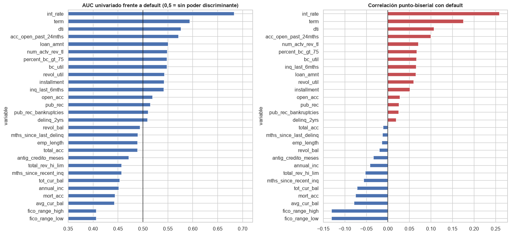
Variables con p de Mann-Whitney >= 0,05: []
Resultados. Todas las diferencias entre clases son estadísticamente significativas (el mayor valor p de las tres pruebas, impreso arriba, es del orden de 10⁻¹⁹), algo esperable con 1,3 millones de datos. La magnitud es lo que distingue a las variables:
int_ratees, de lejos, la más discriminante: AUC univariado de 0,683 y correlación punto-biserial de 0,26. Los préstamos en default pagan en promedio 3,1 puntos más de interés.Le siguen
term(AUC 0,594), el puntaje FICO (0,407, es decir, 0,593 en sentido inverso),dti(0,577) yacc_open_past_24mths(0,571).Las variables de patrimonio (
avg_cur_bal,mort_acc,tot_cur_bal,annual_inc) tienen un efecto protector moderado (AUC entre 0,44 y 0,45).Los conteos de moras y registros públicos,
emp_length,total_accyrevol_baltienen AUC univariados entre 0,48 y 0,52: diferencias significativas pero prácticamente nulas.
La correlación punto-biserial ordena las variables de forma parecida al AUC. Como la de Pearson,
es sensible a la asimetría y a los valores extremos, y por eso reordena algunas variables
asimétricas: annual_inc baja del puesto 12 por AUC al 19 por correlación, y tot_cur_bal sube
del 14 al 9.
3.2 Variables categóricas frente a default#
3.2.1 Tablas de contingencia y tasa de default por categoría#
tasa_global = y.mean()
for c in u.CAT_EDA:
ct = pd.crosstab(df[c], df["default"])
ct.columns = ["pagado", "default"]
ct["n"] = ct.sum(axis=1)
ct["tasa_default_%"] = (100 * ct["default"] / ct["n"]).round(2)
ct["riesgo_relativo"] = (ct["tasa_default_%"] / (100 * tasa_global)).round(2)
ct = ct.sort_values("tasa_default_%", ascending=False)
print(f"\n=== {c} ===")
print(ct.to_string() if len(ct) <= 15 else pd.concat([ct.head(6), ct.tail(6)]).to_string())
=== grade ===
pagado default n tasa_default_% riesgo_relativo
grade
G 4694 4632 9326 49.67 2.49
F 17721 14584 32305 45.14 2.26
E 57993 36193 94186 38.43 1.92
D 140393 61251 201644 30.38 1.52
C 296518 85797 382315 22.44 1.12
B 340441 52654 393095 13.39 0.67
A 220979 14209 235188 6.04 0.30
=== purpose ===
pagado default n tasa_default_% riesgo_relativo
purpose
small_business 10925 4652 15577 29.86 1.49
renewable_energy 714 222 936 23.72 1.19
moving 7297 2229 9526 23.40 1.17
house 5699 1598 7297 21.90 1.10
medical 12203 3409 15612 21.84 1.09
debt_consolidation 616115 165306 781421 21.15 1.06
other 61793 16506 78299 21.08 1.06
educational 335 88 423 20.80 1.04
vacation 7340 1744 9084 19.20 0.96
major_purchase 24052 5496 29548 18.60 0.93
home_improvement 72145 15573 87718 17.75 0.89
credit_card 245568 50051 295619 16.93 0.85
car 12495 2154 14649 14.70 0.74
wedding 2058 292 2350 12.43 0.62
=== home_ownership ===
pagado default n tasa_default_% riesgo_relativo
home_ownership
RENT 411258 124426 535684 23.23 1.16
OTHER 144 38 182 20.88 1.05
OWN 115106 29913 145019 20.63 1.03
ANY 230 56 286 19.58 0.98
MORTGAGE 551956 114879 666835 17.23 0.86
NONE 45 8 53 15.09 0.76
=== addr_state ===
pagado default n tasa_default_% riesgo_relativo
addr_state
MS 4873 1722 6595 26.11 1.31
NE 2686 906 3592 25.22 1.26
AR 7636 2426 10062 24.11 1.21
AL 12711 3934 16645 23.63 1.18
OK 9412 2886 12298 23.47 1.17
LA 11926 3598 15524 23.18 1.16
WV 4129 759 4888 15.53 0.78
NH 5523 942 6465 14.57 0.73
OR 14057 2366 16423 14.41 0.72
VT 2284 371 2655 13.97 0.70
ME 1749 281 2030 13.84 0.69
DC 3024 461 3485 13.23 0.66
=== verification_status ===
pagado default n tasa_default_% riesgo_relativo
verification_status
Verified 319003 99960 418963 23.86 1.19
Source Verified 412249 109314 521563 20.96 1.05
Not Verified 347487 60046 407533 14.73 0.74
=== application_type ===
pagado default n tasa_default_% riesgo_relativo
application_type
Joint App 19456 6344 25800 24.59 1.23
Individual 1059283 262976 1322259 19.89 1.00
=== initial_list_status ===
pagado default n tasa_default_% riesgo_relativo
initial_list_status
w 625570 158440 784010 20.21 1.01
f 453169 110880 564049 19.66 0.98
La calificación grade produce el gradiente más fuerte: la tasa de default pasa de 6,0 % en A a
49,7 % en G, un riesgo relativo de 0,30 a 2,49. Entre los propósitos destaca small_business
(29,9 %) y, en el otro extremo, wedding (12,4 %) y car (14,7 %). Los arrendatarios (RENT,
23,2 %) incumplen más que quienes tienen hipoteca (17,2 %). Llama la atención que los ingresos
verificados tengan más default (23,9 %) que los no verificados (14,7 %): Lending Club
verificaba con más frecuencia a los solicitantes de mayor riesgo, así que la verificación es un
marcador de riesgo y no una garantía. Por estado, la tasa varía entre 13,2 % (DC) y 26,1 % (MS).
3.2.2 Barras apiladas de la proporción de default#
fig, axes = plt.subplots(2, 3, figsize=(17, 10))
for ax, c in zip(axes.ravel(), ["grade", "purpose", "home_ownership", "verification_status",
"application_type", "initial_list_status"]):
prop = pd.crosstab(df[c], df["default"], normalize="index").sort_values(1)
ax.barh(prop.index.astype(str), prop[0], color=u.PALETA[0], label="Pagado")
ax.barh(prop.index.astype(str), prop[1], left=prop[0], color=u.PALETA[1], label="Default")
ax.axvline(1 - tasa_global, color="k", ls="--", lw=1)
ax.set_title(c)
ax.set_xlim(0, 1)
axes[0, 0].legend(loc="lower left")
fig.suptitle("Proporción de default por categoría (línea: proporción global de pagados)",
fontsize=13, weight="bold")
fig.tight_layout()
u.guardar_fig(fig, "03_barras_apiladas")
plt.show()
fig, ax = plt.subplots(figsize=(16, 4))
tasa_estado = (100 * df.groupby("addr_state")["default"].mean()).sort_values()
ax.bar(tasa_estado.index, tasa_estado.values, color="#C44E52")
ax.axhline(100 * tasa_global, color="k", ls="--", lw=1)
ax.set_ylabel("Tasa de default (%)")
ax.set_title("Tasa de default por estado (línea: tasa global)")
ax.tick_params(axis="x", rotation=90)
u.guardar_fig(fig, "03_default_estado")
plt.show()
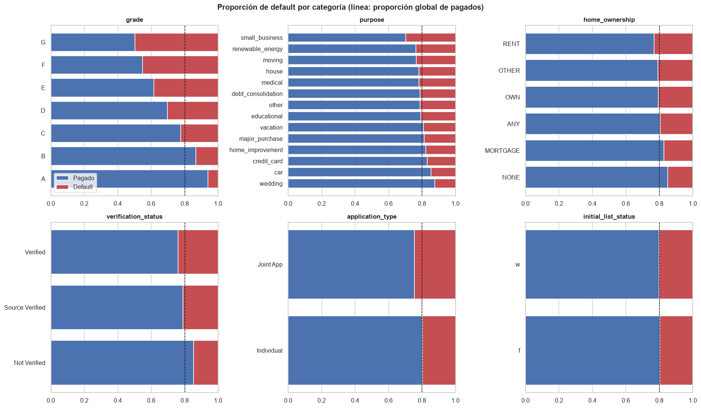
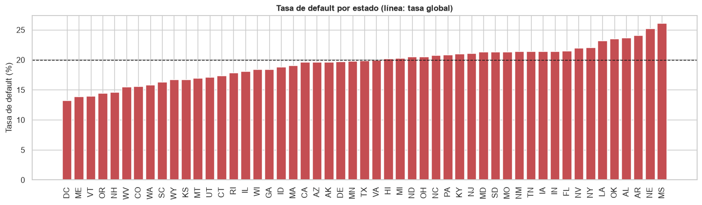
Las barras apiladas muestran visualmente lo que las tablas cuantifican. En grade la proporción
de default crece de forma monótona de A a G; en initial_list_status y application_type las
barras casi coinciden con la línea de referencia (19,7 % y 20,2 % en initial_list_status). En
application_type la categoría Joint App sí se aparta (24,6 %, riesgo relativo 1,23), pero
agrupa solo el 1,9 % de los préstamos, y por eso su asociación global es despreciable.
3.2.3 Prueba de independencia chi-cuadrado y V de Cramér#
chi = pd.DataFrame([dict(zip(["V_Cramer", "chi2", "p", "gl"], est.cramer_v(df[c], y)), variable=c)
for c in u.CAT_EDA]).set_index("variable").sort_values("V_Cramer", ascending=False)
chi.assign(p=chi["p"].map("{:.2e}".format)).round({"V_Cramer": 4, "chi2": 1})
| V_Cramer | chi2 | p | gl | |
|---|---|---|---|---|
| variable | ||||
| grade | 0.2617 | 92310.1 | 0.00e+00 | 6 |
| verification_status | 0.0914 | 11271.0 | 0.00e+00 | 2 |
| home_ownership | 0.0706 | 6732.8 | 0.00e+00 | 5 |
| purpose | 0.0556 | 4182.8 | 0.00e+00 | 13 |
| addr_state | 0.0499 | 3402.3 | 0.00e+00 | 50 |
| application_type | 0.0161 | 349.8 | 4.73e-78 | 1 |
| initial_list_status | 0.0067 | 62.3 | 2.93e-15 | 1 |
La prueba chi-cuadrado rechaza la independencia para las siete variables (p < 10⁻¹⁴), otra vez
por el tamaño de la muestra. La V de Cramér da la magnitud: grade tiene una asociación moderada
con default (V = 0,26); verification_status, home_ownership, purpose y addr_state
tienen asociaciones débiles (V entre 0,05 y 0,09); application_type e initial_list_status
tienen asociaciones despreciables (V < 0,02). Se conservan estas dos últimas porque su costo es
de solo una columna binaria cada una, y los modelos regularizados y los árboles pueden ignorarlas.
3.3 Relaciones entre variables independientes#
3.3.1 Matriz de correlación de Pearson#
corr = df[u.NUM_EDA].corr(method="pearson")
fig, ax = plt.subplots(figsize=(15, 12.5))
mascara = np.triu(np.ones_like(corr, dtype=bool), k=1)
sns.heatmap(corr, mask=mascara, cmap="RdBu_r", vmin=-1, vmax=1, center=0, annot=True, fmt=".2f",
annot_kws={"size": 6.5}, square=True, linewidths=0.3, cbar_kws={"shrink": 0.6}, ax=ax)
ax.set_title("Correlación de Pearson entre variables numéricas")
u.guardar_fig(fig, "03_correlacion")
plt.show()
pares = (corr.where(np.triu(np.ones_like(corr, dtype=bool), k=1)).stack().rename("r")
.reset_index().rename(columns={"level_0": "var_1", "level_1": "var_2"}))
altos = pares[pares["r"].abs() > 0.7].sort_values("r", key=np.abs, ascending=False)
altos.round(3)
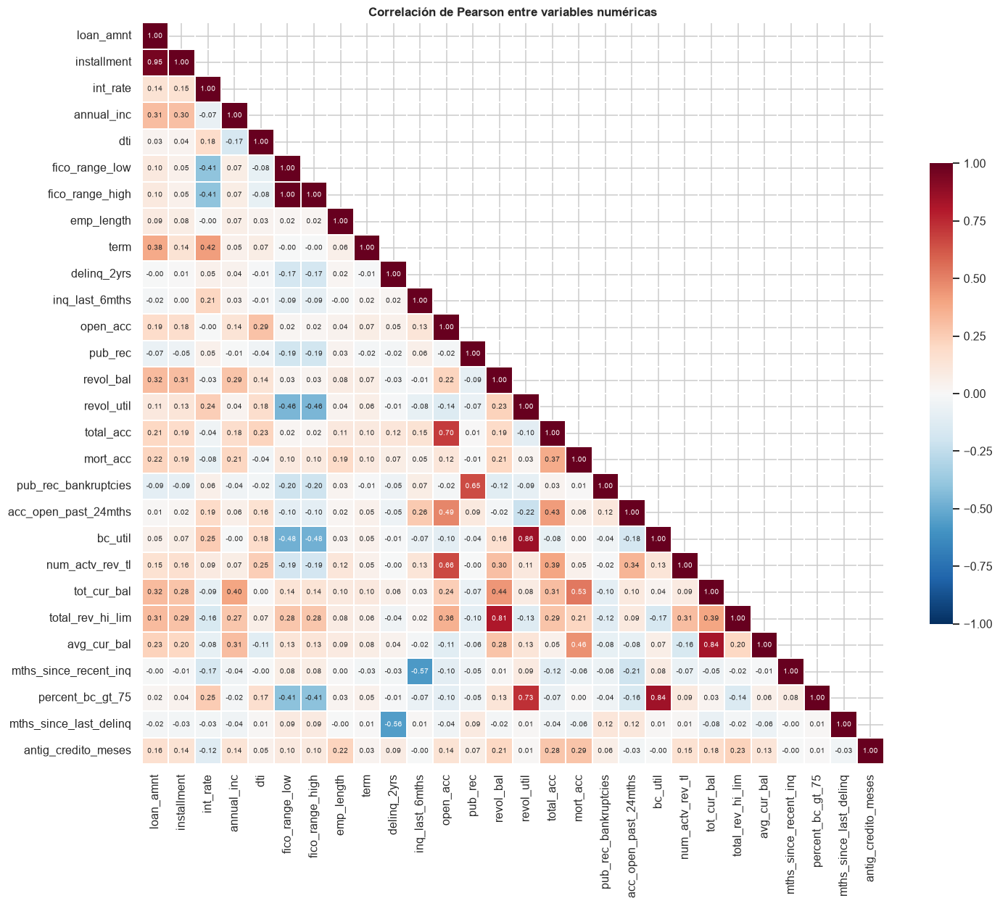
| var_1 | var_2 | r | |
|---|---|---|---|
| 125 | fico_range_low | fico_range_high | 1.000 |
| 0 | loan_amnt | installment | 0.953 |
| 291 | revol_util | bc_util | 0.855 |
| 347 | bc_util | percent_bc_gt_75 | 0.845 |
| 358 | tot_cur_bal | avg_cur_bal | 0.835 |
| 281 | revol_bal | total_rev_hi_lim | 0.810 |
| 297 | revol_util | percent_bc_gt_75 | 0.727 |
| 245 | open_acc | total_acc | 0.701 |
Ocho pares superan \(|r| = 0{,}7\). Todos tienen una explicación contable:
Par |
r |
Explicación |
Decisión |
|---|---|---|---|
|
1,000 |
el rango FICO mide 4 puntos en prácticamente todos los préstamos |
se conserva |
|
0,953 |
la cuota es función del monto, la tasa y el plazo |
se conserva |
|
0,855 |
utilización rotativa total y de tarjetas bancarias |
se conserva |
|
0,845 |
ambas miden uso de tarjetas |
se eliminan ambas |
|
0,835 |
el promedio es el total entre el número de cuentas |
se conserva |
|
0,810 |
saldo y límite rotativo; su cociente es |
se conserva |
|
0,727 |
ambas miden utilización |
se elimina |
|
0,701 |
cuentas abiertas y cuentas totales |
se conserva |
Cuando se elimina una variable de un par, su pareja conserva entre el 49 % (\(r^2\) de open_acc y
total_acc) y el 100 % (FICO) de su variación lineal; la pérdida es mínima en los pares con
\(r \geq 0{,}95\) y moderada en los demás.
La exclusión no busca mejorar el AUC de los árboles, que toleran la colinealidad, sino estabilizar los coeficientes de la regresión logística y del SVM lineal y respetar el supuesto de independencia condicional de Naive Bayes.
3.3.2 Asociación entre variables categóricas (V de Cramér)#
cats = u.CAT_EDA
V = pd.DataFrame(np.eye(len(cats)), index=cats, columns=cats)
for i, a in enumerate(cats):
for b in cats[i + 1:]:
V.loc[a, b] = V.loc[b, a] = est.cramer_v(df[a], df[b])[0]
fig, ax = plt.subplots(figsize=(7.5, 6))
sns.heatmap(V, annot=True, fmt=".2f", cmap="Reds", vmin=0, vmax=1, square=True, ax=ax)
ax.set_title("V de Cramér entre variables categóricas")
u.guardar_fig(fig, "03_cramer")
plt.show()
V.round(3)
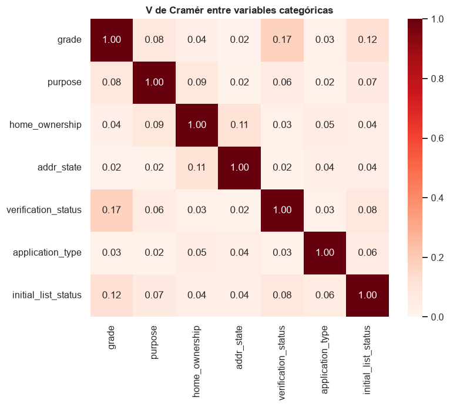
| grade | purpose | home_ownership | addr_state | verification_status | application_type | initial_list_status | |
|---|---|---|---|---|---|---|---|
| grade | 1.000 | 0.083 | 0.038 | 0.017 | 0.175 | 0.025 | 0.119 |
| purpose | 0.083 | 1.000 | 0.086 | 0.021 | 0.062 | 0.021 | 0.068 |
| home_ownership | 0.038 | 0.086 | 1.000 | 0.111 | 0.029 | 0.052 | 0.043 |
| addr_state | 0.017 | 0.021 | 0.111 | 1.000 | 0.021 | 0.044 | 0.040 |
| verification_status | 0.175 | 0.062 | 0.029 | 0.021 | 1.000 | 0.030 | 0.076 |
| application_type | 0.025 | 0.021 | 0.052 | 0.044 | 0.030 | 1.000 | 0.062 |
| initial_list_status | 0.119 | 0.068 | 0.043 | 0.040 | 0.076 | 0.062 | 1.000 |
Las asociaciones entre variables categóricas son débiles: la mayor es entre grade y
verification_status (V = 0,18), coherente con que se verificaban más los préstamos riesgosos, y
ninguna justifica eliminar una variable.
3.3.3 Redundancias entre la calificación, la tasa de interés y el puntaje FICO#
grade es categórica y int_rate numérica; su asociación se mide con la razón de correlación
\(\eta^2\) (proporción de la varianza de int_rate explicada por grade).
def eta2(cat, num):
d = pd.DataFrame({"c": cat, "x": num}).dropna()
media = d["x"].mean()
entre = d.groupby("c")["x"].agg(["size", "mean"]).pipe(lambda g: (g["size"] * (g["mean"] - media) ** 2).sum())
return entre / ((d["x"] - media) ** 2).sum()
print(f"eta² de int_rate explicada por grade: {eta2(df['grade'], df['int_rate']):.3f}")
print(f"eta² de fico_range_high explicada por grade: {eta2(df['grade'], df['fico_range_high']):.3f}")
print(f"r de Pearson int_rate - fico_range_high: {corr.loc['int_rate', 'fico_range_high']:.3f}")
print(f"r de Pearson fico_range_low - fico_range_high: {corr.loc['fico_range_low', 'fico_range_high']:.4f}")
fig, ax = plt.subplots(figsize=(9, 4))
sns.boxplot(data=df, x="grade", y="int_rate", order=list("ABCDEFG"), color="#8DA0CB",
showfliers=False, ax=ax)
ax.set_title("Tasa de interés por calificación de riesgo")
u.guardar_fig(fig, "03_grade_int_rate")
plt.show()
eta² de int_rate explicada por grade: 0.907
eta² de fico_range_high explicada por grade: 0.235
r de Pearson int_rate - fico_range_high: -0.406
r de Pearson fico_range_low - fico_range_high: 1.0000
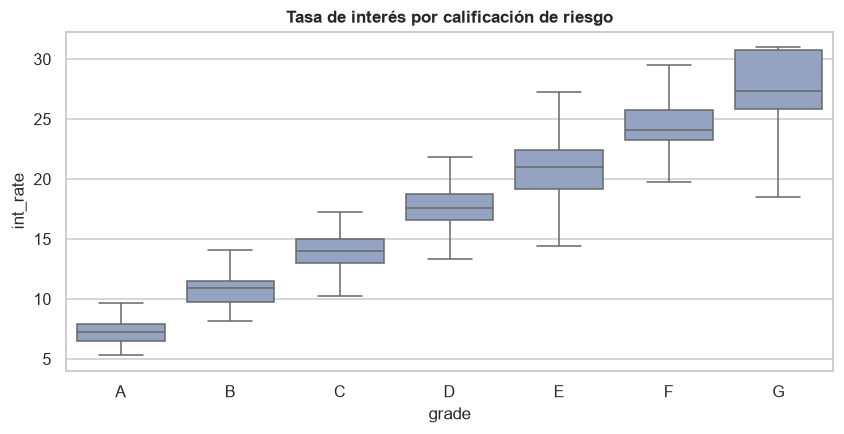
grade explica el 90,7 % de la varianza de int_rate: Lending Club fija la tasa a partir de la
subcalificación, así que ambas miden lo mismo y int_rate contiene la información de grade
con más resolución. Se excluyen grade y sub_grade del modelado. La relación entre FICO e
int_rate que sugiere el enunciado existe (r = −0,41; grade explica el 23,5 % de la varianza
de FICO), pero está lejos de la redundancia: el FICO es una de las entradas del precio, no el
precio mismo, y ambas variables se conservan.
3.4 Visualizaciones avanzadas#
3.4.1 Pairplot de las variables principales#
vars_pp = ["int_rate", "fico_range_high", "dti", "loan_amnt", "annual_inc"]
pp = muestra_chica[vars_pp + ["default"]].copy()
pp["annual_inc"] = np.log1p(pp["annual_inc"])
pp = pp.rename(columns={"annual_inc": "log1p_annual_inc"})
g = sns.pairplot(pp, hue="default", palette=u.PALETA, corner=True, diag_kind="kde",
plot_kws={"s": 6, "alpha": 0.35, "linewidth": 0}, height=2.3)
g.figure.suptitle("Pairplot (muestra de 5.000 préstamos)", y=1.01, weight="bold")
g.savefig(u.FIGURAS / "03_pairplot.png")
plt.show()
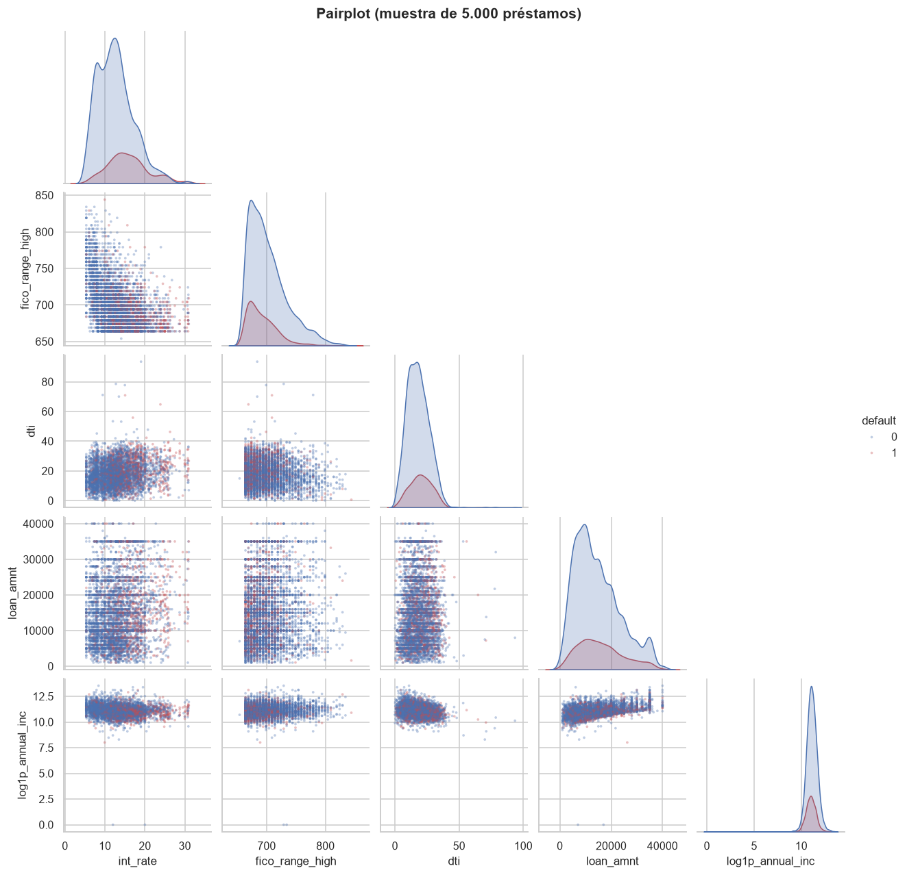
El pairplot no muestra fronteras nítidas entre clases en ningún par de variables: los defaults
(rojo) se concentran en la zona de tasa alta y FICO bajo, pero mezclados con préstamos pagados.
La relación negativa entre int_rate y fico_range_high y la positiva entre loan_amnt e
ingreso son las únicas visibles. Se espera, por tanto, un AUC moderado (del orden de 0,70) y no
una separación casi perfecta.
3.4.2 Densidades comparativas (KDE) por clase#
fig, axes = plt.subplots(2, 4, figsize=(17, 7.5))
for ax, c in zip(axes.ravel(), clave):
d = muestra[[c, "default"]].dropna()
if c == "annual_inc":
d[c] = np.log1p(d[c])
else:
d[c] = d[c].clip(upper=d[c].quantile(0.995))
for k in (0, 1):
sns.kdeplot(d.loc[d["default"] == k, c], ax=ax, fill=True, alpha=0.3, color=u.PALETA[k],
label=u.ETIQUETAS[k], common_norm=False, bw_adjust=1.2)
ax.set_title("log1p(annual_inc)" if c == "annual_inc" else c)
ax.set_xlabel("")
axes[0, 0].legend()
fig.suptitle("Densidades por clase (muestra de 100.000 préstamos)", fontsize=13, weight="bold")
fig.tight_layout()
u.guardar_fig(fig, "03_kde")
plt.show()
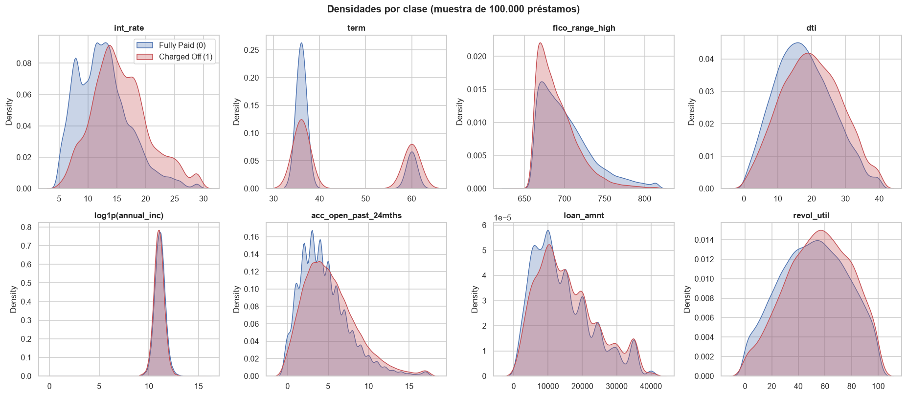
Las densidades por clase se solapan en gran parte de su rango. El desplazamiento es claro en
int_rate, term (más plazos de 60 meses entre los defaults) y fico_range_high, moderado en
dti y acc_open_past_24mths y pequeño en annual_inc, loan_amnt y revol_util.
3.4.3 Matriz de dispersión#
sm = muestra_chica[["int_rate", "fico_range_high", "dti", "revol_util", "acc_open_past_24mths",
"default"]].dropna()
ejes = pd.plotting.scatter_matrix(sm.drop(columns="default"), figsize=(11, 11), alpha=0.25, s=5,
diagonal="hist", c=sm["default"].map(u.PALETA), hist_kwds={"bins": 30})
plt.suptitle("Matriz de dispersión (muestra de 5.000; rojo = default)", weight="bold", y=0.92)
plt.savefig(u.FIGURAS / "03_scatter_matrix.png")
plt.show()
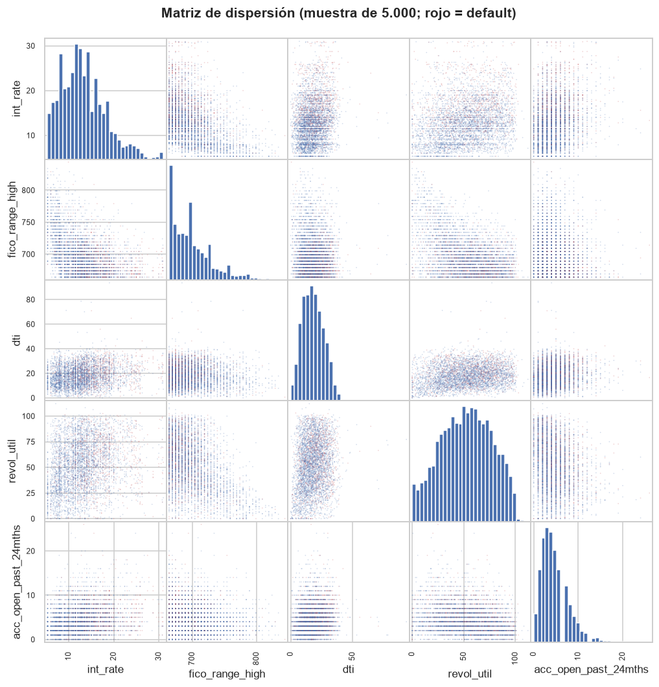
La matriz de dispersión no revela relaciones no lineales fuertes entre las variables clave. Las
nubes son difusas, salvo la frontera inferior de fico_range_high y la estructura en bandas de
int_rate, que refleja la grilla discreta de tasas de Lending Club.